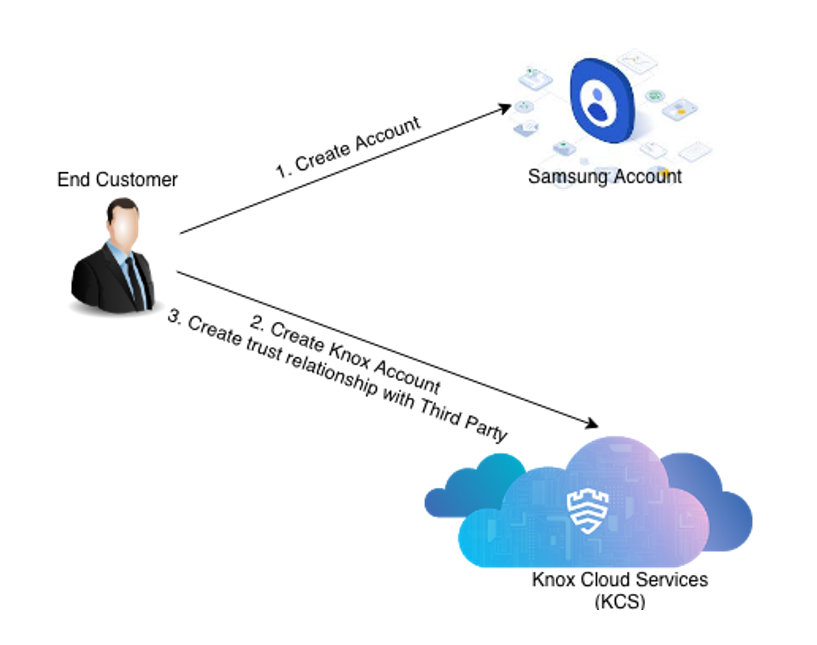
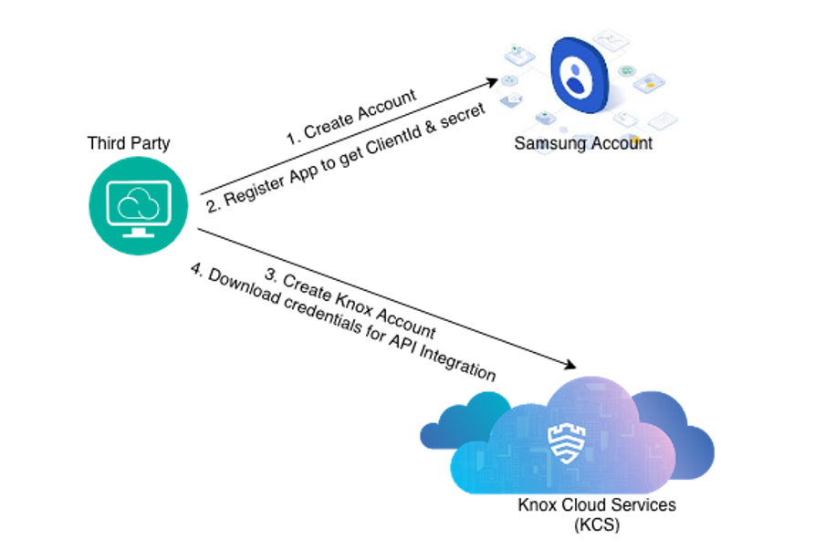
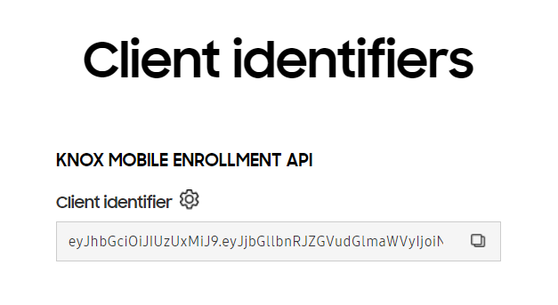

Integration for EMMs
Last updated April 30th, 2024
This is the old authentication workflow, if you want to implement the new workflow, see the new authentication workflow overview page.
While this authentication flow incorporates parts of the general Samsung Account and Knox cloud services authentication protocols, it is not the same and should only be used for third party portal integration. This flow uses a set of specially designed APIs for third party integration maintained separately from the standard Samsung Account and Knox cloud services authentication APIs.
This tutorial guides third party portal providers through integrating with Samsung Account and Knox cloud services in order to:
- Add Samsung Account end customer authentication to a web portal
- Make calls from the web portal to Knox cloud services APIs on behalf of end customers
After you implement this authentication flow, your customers will be able to create a Samsung Account, sign up for Knox cloud services, and then establish a trust relationship with your service to start managing Knox data from your portal (shown in the following end customer registration diagram).

Authentication sequence diagram
The following diagram shows the 10-step authentication process and data flow:

Terms to know
| Term | Description |
|---|---|
| Knox cloud services | Cloud services and REST APIs for products like Knox Mobile Enrollment and Knox Configure. |
| End customer | A customer enrolled in one or more Knox cloud services who has also registered for Samsung Account. |
| Third party provider | A company providing a Knox-integrated service, allowing end customers to manage data without logging into a Knox admin portal. |
| Third party portal | A web portal hosted by a third party provider. |
| Samsung Account (SA) | Samsung’s identity provider for Knox cloud services. |
| Samsung Account access token | An OAuth2 token obtained from Samsung Account when the end customer signs into a third party portal through Samsung Account. |
| KCS session token | A token that establishes a login session for an end customer, obtained from Knox cloud services with a valid Samsung Account access token. |
| KCS access token | A token used to make requests to Knox cloud services APIs, obtained from Knox cloud services with a valid Knox cloud services session token. |
Before you start
To get started with Knox cloud services:
-
Sign up for a partner account to become a Samsung Knox Partner.
-
Apply for Knox Cloud API access by contacting your local Samsung representative or the Knox team by submitting a ticket in the Knox Developers dashboard > Support > Technical Support.
-
Prepare the following items:

Samsung Account client ID and secret
Locate your Samsung Account client ID and secret. If you need help with either, contact Knox Support with the following information:
Field Description Redirect URL The URL where the user is redirected after their Samsung Account authentication is successful. Alias ID An identifier which maps the Samsung Account with a client ID. This needs to be passed by a third-party authenticator when calling the Samsung Account OAuth2 API (for example, https://account.samsung.com/accounts/v1/thirdPartyAliasID/signInGate).Knox API token library
Download the Knox utility JAR (which supports Java version 1.6 and above) or the Knox token utility NuGet package. You’ll need this utility to sign your Knox cloud services session and access tokens.
Knox public and private key pair
Get your public and private key pair from the Knox API portal.
- Go to the Knox API portal from the Knox Developer portal. The Knox API portal works best with Chrome, Firefox, Safari, or Microsoft Edge.
- Click Download to generate and download the
keys.jsonfile that contains the public and private key pair.
Ensure that you save the
keys.jsonfile, as it is only generated once and can’t be restored if lost.The
keys.jsonfile contains the following information:Key Description Public key Sent in the body of the sessiontoken and accesstoken APIs and stored by Samsung Knox to validate signed requests. Private key Stored for your use and never revealed. This key is used for signing your Knox cloud services Client Identifier, session token, and access token. This key isn’t stored by Samsung Knox and we’ll never request it from you. Knox Client Identifier
Obtain your Client Identifier from the Knox API portal (US region | EU region). This unique identifier only needs to be generated once unless:
- The privileges need to be changed.
- The Client Identifier is lost or stolen.
In both cases, regenerating the Client Identifier invalidates the previous one. The image below shows the page you see when generating the Client Identifier from the portal.

Help end customers authorize your portal
End customers must enter your Knox partner ID into their Knox admin portal to authorize your service. This creates a full trust relationship, giving your portal permission to make calls to Knox cloud services on the end customer’s behalf.
For example, an end customer using Knox Mobile Enrollment (KME) should log into their KME admin portal and enter your Knox partner ID.
Your Knox partner ID is the unique ID issued by Knox cloud services when your service applies for access to a Knox cloud services API.
How you share your Knox partner ID is entirely up to you. Knox cloud services is not involved with sharing your Knox partner ID with end customers.
Steps for third-party authentication
See also
On this page
Is this page helpful?